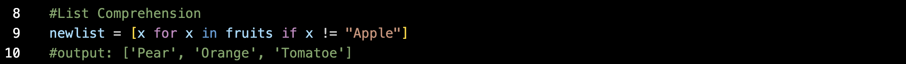
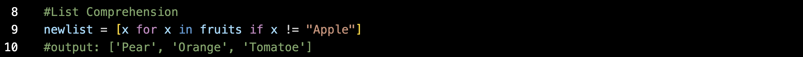
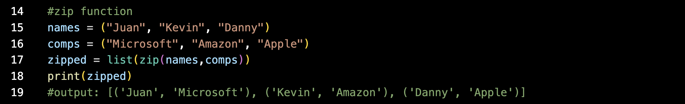

Week 2/8/2023 - 2/22/2023
List comprehension offers shorter syntax when iterating through a list or item in Python. For example, in the following code we are iterating through a list, and appending the fruits that are not "Apple" to a new list.
 Using List Comprehension we can can shorten the code using the following syntax
Using List Comprehension we can can shorten the code using the following syntax
 Now, a new list can be created with one line of code
Now, a new list can be created with one line of code
The zip function "joins" two tuples together, with the first item in each passed iterator paired together. Heres an example, where one tuple has the names of people, and the second tuple has the list of the respective company they work at.
Notice how I passed the zip into a list, and stored it in a variable called zipped. You can make the zipped object a dictionary, set, or list. You can also use a for loop to iterate through the items

Here are some questions I thought of when learning about the zip function:
Can you zip more than two tuples? The answer is yes! You just add the tuples into the zip argument.
If one list is bigger than the other, the zip function will zip up to the shortest list. You can use the .zip_longest() method to make a zip item that is as long as the longest argument passed.